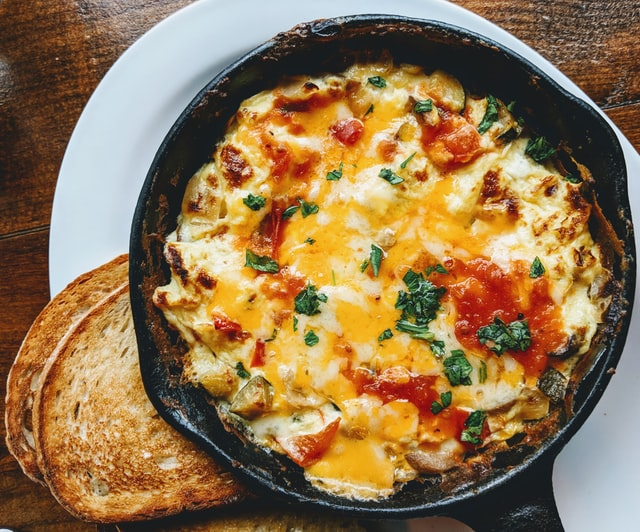

Lobster Mac & Cheese

Description
"In this healthy twist on lobster mac and cheese, we add a secret ingredient to the cheese sauce: cauliflower. The cauliflower blends into the cheese sauce so you won't even realize you're eating a vegetable. Serve this impressive main dish for a dinner party or holiday meal."
Ingredients
- 1 pound whole-wheat pasta or chickpea cavatappi pasta
- 4 cups whole milk
- 4 cups chopped cauliflower florets
- 2 cloves garlic, grated
- 1⁄4 teaspoon saffron threads or smoked paprika
- 2 cups shredded sharp Cheddar cheese
- 1 cup shredded low-moisture part-skim mozzarella cheese
- 1⁄4 teaspoon ground pepper
- 1⁄4 teaspoon salt
- 1⁄4 teaspoon crushed red pepper
- 1 pound fresh or thawed frozen cooked lobster meat (from tails, claws and/or knuckles)
- 1⁄2 cup whole-wheat panko breadcrumbs
- 11⁄2 teaspoons extra-virgin olive oil
Steps
- Preheat oven to 350°F with rack about 10 inches from heat source. Coat a broiler-safe 9-by-13-inch baking dish with cooking spray. Bring a large heavy pot of water to a boil; cook pasta until al dente, according to package directions. Drain; return to the pot and set aside.
- Combine milk, cauliflower and garlic in a medium saucepan; bring to a boil over medium-high heat. Reduce heat to low; stir in saffron (or paprika), and simmer, stirring occasionally, until the cauliflower is tender, 10 to 12 minutes. Pour the mixture into a blender (use caution when blending hot liquids). Secure the lid on the blender and remove the center piece to allow steam to escape. Place a clean towel over the opening. Process until smooth, about 1 minute. (Alternatively, use an immersion blender to process the mixture in the pan until smooth.)
- Return the pureed cauliflower mixture to the pan; bring to a simmer over low heat. Add Cheddar and mozzarella; cook, whisking constantly, until the sauce is smooth and the cheeses are completely melted, 1 to 2 minutes. Remove from heat; whisk in pepper, salt and crushed red pepper.
- Pour the cauliflower sauce over the pasta in the pot; stir until evenly coated. Stir in lobster. Spoon the mixture into the prepared baking dish. Stir together panko (or cauliflower crumbs) and oil in a small bowl; sprinkle over the pasta mixture. Cover the baking dish with foil.
- Bake until bubbling, 40 to 45 minutes Remove from oven and carefully remove foil. Set oven to broil. Broil until the panko is crispy and golden brown, 2 to 3 minutes. Let stand for 5 minutes before serving.
Original Recipe